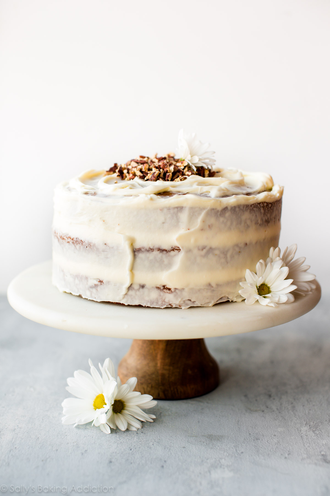
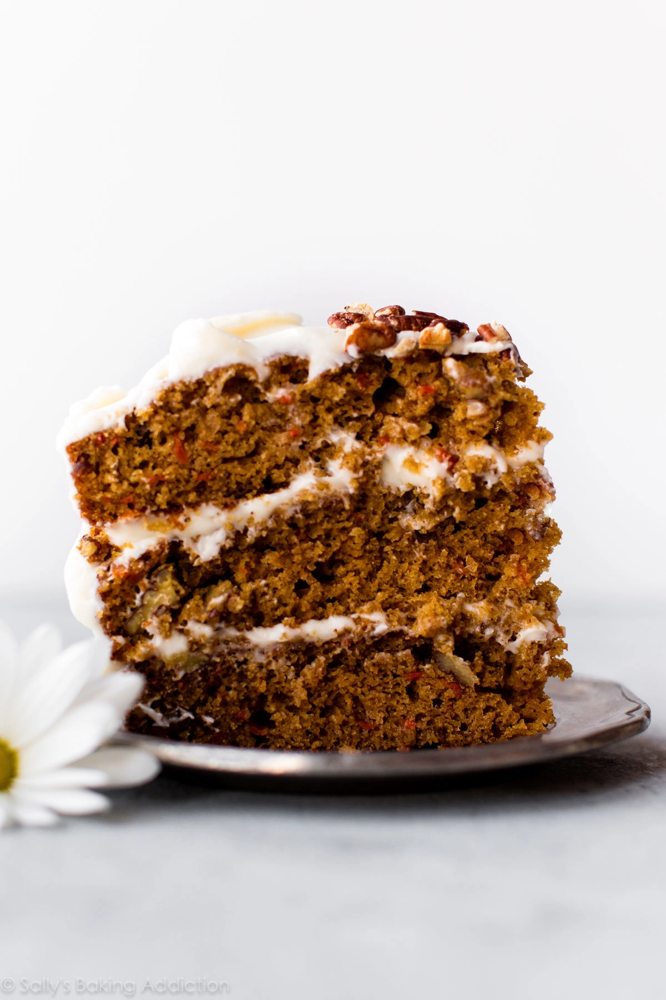
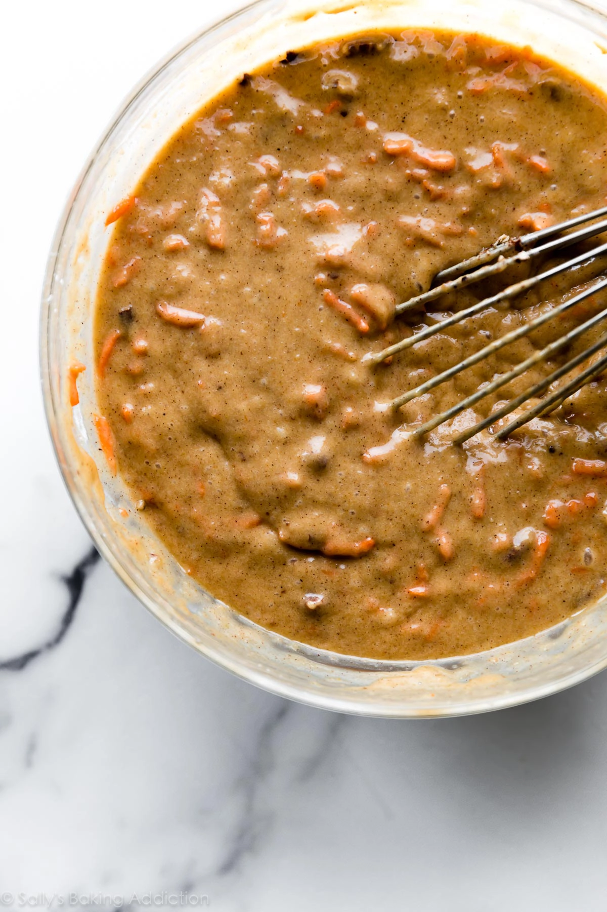

My Favorite Carrot Cake Recipe
With its outstanding spice flavor, super moist crumb, and velvety cream
cheese frosting, this is truly the best carrot cake. Use brown sugar and
toasted pecans for deeper flavor.

I don’t call it carrot cake. I call it “Birthday Cake.” It’s my one and
only choice on my big day. I’ve adopted this tradition and make my own
carrot birthday cake each year. And, of course, we never limit it to only
once per year. This cake graces our Easter table and I love making it for
spring brunches, baby showers, and our community’s new bake sale.
In fact, this carrot cake recipe is so popular around here that I stopped
asking what everyone wants for dessert! Because it’s always this!
And, finally, I firmly believe that the ONLY thing that competes with
carrot cake is a batch of carrot cake cupcakes.

What Does This Carrot Cake Taste Like?
This carrot cake sets the standard for carrot cakes everywhere. It’s
deeply moist and filled with toasted pecans. Most of its flavor comes from
brown sugar, cinnamon, ginger, nutmeg, and carrots. Ginger adds the most
delicious zing, but it isn’t overpowering at all. The cake is dense, but
each forkful tastes super soft and extra lush. If made ahead, the flavor
intensifies and the cream cheese frosting seeps into the layers, creating
an even more tender bite.
So if you’re looking for a make-ahead cake whose taste and texture won’t
be compromised, make this! It’s a total classic and 1 taste converts
everyone, even those silly people who “don’t like carrot cake”. Who ARE
you people?! 😉

How to Make Carrot Cake Moist
If it isn’t stick-to-the-back-of-your-fork moist, it’s just not worth it.
So I worked to create an EXTRA moist carrot cake. Don’t skip these
ingredients:
-
Brown Sugar: I’ve come across a lot of carrot cake
recipes that are sweetened with mostly granulated sugar. That’s great,
but granulated sugar doesn’t do much for the cake besides sweeten it.
Brown sugar not only sweetens cake, it produces so much flavor and
moisture. It’s just… the best!
-
Oil: Cakes need fat to make them soft and tender. When
preparing cakes without super strong flavors such as vanilla cake and
white cake, I prefer to use butter as the fat. Butter also gives them
flavor. But for cakes like chocolate cake and carrot cake that have
flavor from other ingredients, I find flavorless oil is the best choice
-
Applesauce: To prevent the cake from tasting too moist (wet) and oily, I
add some applesauce. You could even use crushed pineapple, too! These
flavors pair beautifully with brown sugar and spices.
-
Freshly Shredded Carrots: My #1 tip for carrot cakes is
to shred whole carrots at home. Do not use packaged pre-shredded carrots
because they are hard and dry. You need about 4 large carrots for this
recipe. And when you grate them, you’ll notice how wet they are. That is
PRIME moisture for your baked cake and you don’t want to skip it!
Carrot Cake Success Tips
-
Line your cake pans with parchment. Place your cake
pans on a large sheet of parchment paper. Trace the bottom of the cake
pan with a pencil, then cut the circles. Grease the pan and the
parchment paper. Parchment paper rounds guarantee the cakes won’t stick!
-
Make it ahead. One of the BEST parts about carrot cake
is that it gets better with time, even after 1 full day. The flavors
mingle, the moisture prevails, and the cream cheese frosting sets into
the layers. It’s ridiculously good! You can make and frost the cake 1
day in advance. Keep it covered in the refrigerator and bring to room
temperature, if desired, before serving.
- Use freshly grated carrots. Grate them yourself.
Description
With its outstanding spice flavor, super moist crumb, and velvety cream
cheese frosting, this is truly the best carrot cake. Use brown sugar and
toasted pecans for deeper flavor.
Ingredients
-
2 cups (260g) chopped pecans (1 cup for cake, 1 cup for
garnish. Nuts are optional. )*
-
1 and 1/2 cups (300g) packed light or dark brown sugar
- 1/2 cup (100g) granulated sugar
-
1 cup (240ml) vegetable oil or
canola oil (or melted coconut oil)*
- 4 large eggs
- 3/4 cup (133g) smooth unsweetened applesauce
- 1 teaspoon pure vanilla extract
- 2 and 1/2 cups (312g) all-purpose flour (spoon & leveled)
- teaspoons baking powder
- 1 teaspoon baking soda
- 1/2 teaspoon salt
- 1 and 1/2 teaspoons ground cinnamon
- 1 teaspoon ground ginger
- 1/4 teaspoon ground nutmeg
- 1/4 teaspoon ground cloves
- 2 cups (260g) grated carrots (about 4 large)
Return back to top
Back